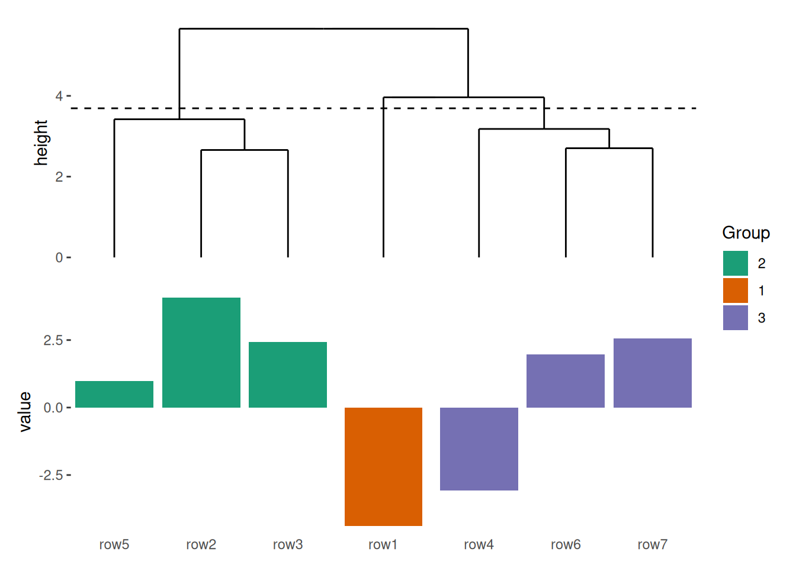
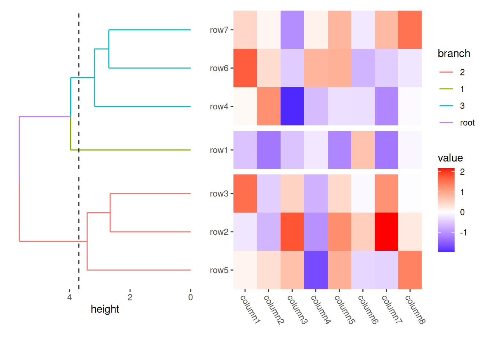
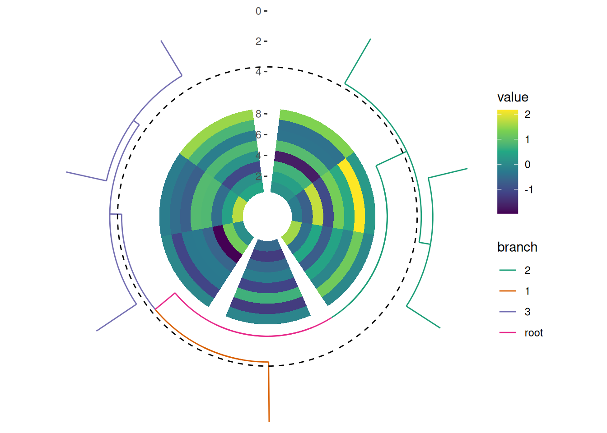

install.packages("ggalign")1 Introduction
ggalign extends ggplot2 by providing advanced tools for aligning and organizing multiple plots, particularly those that automatically reorder observations, such as dendrogram. It offers fine control over layout adjustment and plot annotations, enabling you to create complex visualizations while leveraging the familiar grammar of ggplot2.
1.1 Installation
You can install ggalign from CRAN using:
Alternatively, install the development version from r-universe with:
install.packages("ggalign",
repos = c("https://yunuuuu.r-universe.dev", "https://cloud.r-project.org")
)or from GitHub with:
# install.packages("remotes")
remotes::install_github("Yunuuuu/ggalign")1.2 General design
The core feature of ggalign lies in its integration of the grammar of graphics into advanced visualization through its object-oriented Layout system. The package provides three main Layout classes:
- the
StackLayoutclass: Put plots horizontally or vertically. - the
QuadLayoutclass: Arranges plots in the four quadrants (top, left, bottom, right) around a main plot. This layout is ideal for designs that require supplementary plots or annotations surrounding a central figure. - the
CircleLayoutclass: Positions plots in a circular arrangement.
Each Layout class supports the alignment of both discrete (ordinal) and continuous variables. Depending on the desired alignment across multiple plots within a layout, the following variants are available:
For StackLayout:
stack_discrete(): Align discrete variable along the stack.stack_continuous(): Align continuous variable along the stack.
stack_layout() integrates the functionalities of stack_discrete() and stack_continuous() into a single interface. For simplicity, throughout this book, I will refer to both variants as stack_layout().
For QuadLayout:
quad_continuous/ggside: Align continuous variables in both horizontal and vertical directions.quad_discrete: Align discrete variables in both horizontal and vertical directions.quad_layout: Aligns discrete or continuous variables either horizontally or vertically.
The functions quad_continuous() and quad_discrete() are specialized versions of quad_layout() (Section 7.5): quad_continuous() sets both xlim and ylim arguments, while quad_discrete() does not set xlim or ylim. For simplicity, throughout this book, I will refer to all of the variants as quad_layout().
For CircleLayout:
circle_discrete(): Align discrete variable in the circle.circle_continuous(): Align continuous variable in the circle.
circle_layout() integrates the functionalities of circle_discrete() and circle_continuous() into a single interface. For simplicity, throughout this book, I will refer to both variants as circle_layout().

1.3 Align axes in ggplot
Before introducing the package, let’s first discuss how to align axes in ggplot2. For continuous axes, alignment is straightforward because we just need to ensure that all plots have the same limits. This can be achieved in the *_continuous() function by setting the limits (or xlim/ylim) argument.
Aligning discrete axes is more challenging because we must first ensure that the number of unique discrete values is the same across all plots, and that the ordering is consistent. In ggplot2, it’s difficult to align discrete axes, since some plots may self-ordered. This issue is compounded when working with long-formatted data frames, which is required by ggplot2.
To address this, the ggalign package typically uses matrix input for layouts that require aligning discrete axes (*_discrete() functions). Each row of the matrix represents a unique discrete value (observation), and the number of rows corresponds to the total number of unique values (number of observations). To ensure consistent ordering across plots, the internal just need to reorder the rows. This approach is also well-suited for functions like quad_layout()/ggheatmap(), where axes need to be aligned in both directions simultaneously, as matrices can be transposed (i.e., switching rows to columns and columns to rows). When drawing the plot, the ggalign package will melt the matrix into a long-formatted data frame. You may worry about that the matrix format may not fully support all input requirements for plots, the ggalign package provides a function (scheme_data()) to transform the plot data as needed to fit your specific use case.
We often refer to “observations” when discussing discrete axes. Observations typically correspond to discrete variables, such as data points or samples. In the rest of the book, I will use “observations” and “discrete variables” interchangeably. You can assume that any reference to “observations” also applies to discrete variables.
1.4 Getting Started
library(ggalign)
#> Loading required package: ggplot2The usage of ggalign is simple if you’re familiar with ggplot2 syntax, the typical workflow includes:
- Initialize the layout.
- Customize the layout with:
align_group(): Group observations into panel with a group variable.align_kmeans(): Group observations into panel by kmeans.align_order(): Reorder layout observations based on statistical weights or by manually specifying the observation index.align_reorder: Reorder observations using an arbitrary statistical functionalign_hclust(): Reorder or group observations based on hierarchical clustering.
- Adding plots with:
align_dendro(): Add a dendrogram to the plot, and reorder or group observations based on hierarchical clustering.ggalign(): Initialize a ggplot object and align the axes.ggmark(): Add a plot to annotate selected observations.ggcross(): Initialize a ggplot object to connect two different layout crosswiseggfree(): Initialize a ggplot object without aligning the axes.
- Layer additional
ggplot2elements such as geoms, stats, or scales.
set.seed(123)
small_mat <- matrix(rnorm(56), nrow = 7)
rownames(small_mat) <- paste0("row", seq_len(nrow(small_mat)))
colnames(small_mat) <- paste0("column", seq_len(ncol(small_mat)))Every *_layout() function accepts default data, which will be inherited by all plots within the layout.
Here’s a simple example:
stack_discretev(small_mat) +
align_dendro() +
theme(axis.text.x = element_text())- 1
- We initialize a vertical stack.
- 2
- Reorder the observations based on hierarchical clustering and add a dendrogram tree.
- 3
- Add x-axis text.
This function produces a simple dendrogram. The stack_discretev() function initializes a vertical stack and aligns discrete variables. It is simply an alias for stack_discrete("v"). By default, the axis text on the axis used for alignment is removed. This is because it’s often unclear which plot should display the axis text, as typically, we want it to appear in only one plot. However, you can easily use the theme() function to control where the axis text appears.
Internally, align_dendro() will reorder the observations based on the dendrogram, and other plots in the layout will follow this ordering.
stack_discretev(small_mat) +
align_dendro() +
ggalign(data = rowSums) +
geom_bar(aes(.discrete_x, value), stat = "identity") +
theme(axis.text.x = element_text())- 1
- We initialize a vertical stack.
- 2
- Reorder the observations based on hierarchical clustering and add a dendrogram tree.
- 3
- Create a new ggplot in the layout, and use data based on the sum of the layout data.
- 4
- Add a bar layer.
- 5
- Add x-axis text.
The data in the underlying ggplot object of ggalign() function contains following columns (more details will be introduced in the Section 5.1):
.panel: the group panel for the aligned axis. It meansx-axisfor vertical stack layout,y-axisfor horizontal stack layout..x/.yand.discrete_x/.discrete_y: an integer index ofx/ycoordinates and a factor of the data labels (only applicable when names exists)..namesand.index: A character names (only applicable when names exists) and an integer of index of the original data.value: the actual value (only applicable ifdatais amatrixor atomic vector).
It is recommended to use
.x/.y, or.discrete_x/.discrete_yas thex/ymapping.
align_dendro() can also split the observations into groups.
stack_alignv(small_mat) +
align_dendro(k = 3) +
ggalign(data = rowSums) +
geom_bar(aes(.discrete_x, value, fill = .panel), stat = "identity") +
scale_fill_brewer(palette = "Dark2", name = "Group") +
theme(axis.text.x = element_text())- 1
- We initialize a vertical stack.
- 2
- Reorder and group the observations based on hierarchical clustering, and add a dendrogram tree.
- 3
- Create a new ggplot in the layout, and use data based on the sum of the layout data.
- 4
- Add a bar layer.
- 5
- Set fill scale palette.
- 6
- Add x-axis text.

One common visualization associated with the dendrogram is the heatmap. You can use ggheatmap() to initialize a heatmap layout. When grouping the observations using align_dendro(k = 3), a special column named branch is added, which you can use to color the dendrogram tree.
ggheatmap(small_mat) +
theme(axis.text.x = element_text(angle = -60, hjust = 0)) +
anno_left() +
align_dendro(aes(color = branch), k = 3) +
scale_fill_brewer(palette = "Dark2")
#> → heatmap built with `geom_tile()`- 1
- We initialize a heatmap layout.
- 2
- adjust the x-axis label theme element.
- 3
- we initialize an annotation in the left side of the heatmap body, and set it as the active context, in this way, all following addition will be directed to the left annotation.
- 4
-
Reorder and group the observations based on hierarchical clustering, and add a dendrogram tree, coloring the tree by
branch. - 5
- Set fill scale palette.

ggheatmap() will automatically add axis text in the heatmap body, so you don’t need to manually adjust axis text visibility using theme(axis.text.x = element_text())/theme(axis.text.y = element_text()).
We can also arrange the dendrogram in a circular layout to visualize hierarchical relationships in a more compact and aesthetically pleasing way.
circle_discrete(small_mat, radial = coord_radial(inner.radius = 0.1)) +
ggalign() +
geom_tile(aes(y = .column_index, fill = value)) +
scale_fill_viridis_c() +
align_dendro(aes(color = branch), k = 3L) +
scale_color_brewer(palette = "Dark2")- 1
- We initialize a circle layout and set the inner radius.
- 2
- Create a new ggplot in the layout, and use data the same with the layout data.
- 3
-
Add a tile layer, the matrix input will be converted into a long formated data frame with column
.column_indexindicates the column index of the original matrix. - 4
- Set fill scale palette.
- 5
-
Reorder and group the observations based on hierarchical clustering, and add a dendrogram tree, coloring the tree by
branch. - 6
- Set color scale palette.

Having explored the core principles of ggalign, you should now be familiar with its basic workflow. In the next chapter, we’ll introduce the StackLayout, a powerful tool for arranging multiple plots in a stacked fashion—either horizontally or vertically—while maintaining full control over their alignment. We’ll explore how StackLayout and its various functions can give you even greater flexibility in creating sophisticated layouts.